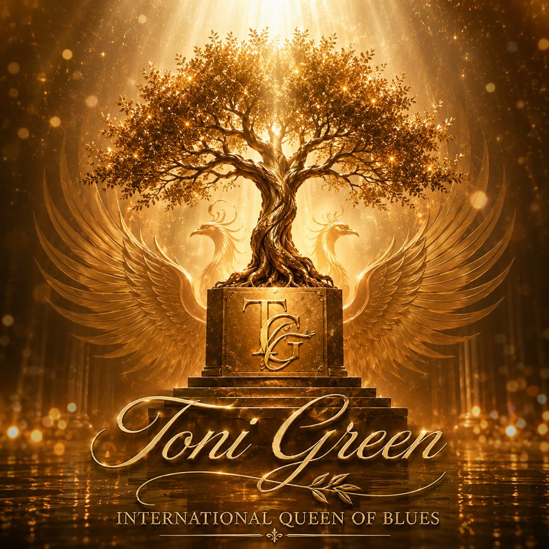

God Knew Her Name
March on Washington
A faith-centered prayer vigil and march on the National Mall, named for Toni Green’s song “God Knew Her Name.”
October 21–24, 2027
Washington, DC
The song
Watch the official video of “God Knew Her Name.” Captions are available on YouTube. Open on YouTube.
Why we march
These are the aims of the gathering. They are not a platform of demands, and they do not belong to any other march.
- To gather in faith. We come together for a prayer vigil and a march, open to all.
- To name who was overlooked. We honor people who have prayed, served, and carried pain faithfully, and who were never forgotten by God.
- To walk together in public. We intend to stand on the National Mall so those names are spoken where the country can hear them.
Locations, routes, and times remain subject to National Park Service review of the permit application filed November 24, 2026.